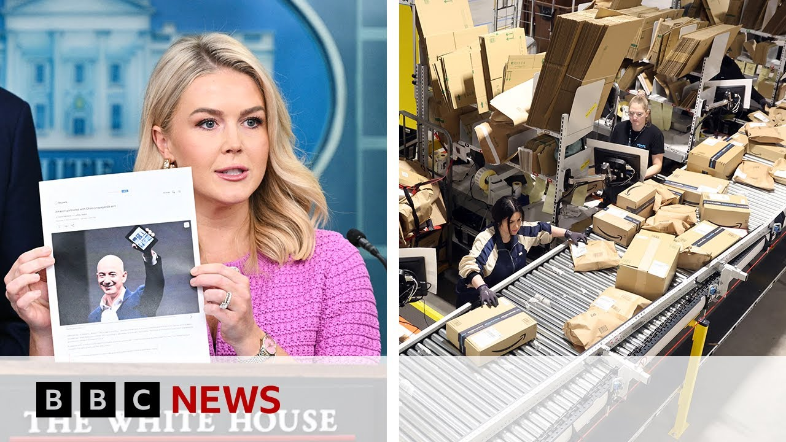

来B站一起耍【Global每日英语简报】
【白宫回击亚马逊显示关税价格上涨的“计划” | BBC新闻】
Summary: The Trump administration marks 100 days in office with a focus on trade and tariffs, creating market uncertainty. Amazon faces White House criticism over a reported plan to display import duties, highlighting tensions between businesses and the administration.
摘要： 特朗普政府执政100天，重点关注贸易和关税问题，引发市场不确定性。亚马逊因被报道计划显示进口关税而遭到白宫批评，突显了企业与政府之间的紧张关系。

⏱️ Estimated Reading Time: 9 min
It's a big day for the Trump administration, marking a 100 days in office.
对特朗普政府来说，这是重要的一天，标志着执政100天。
And they've been busy, arguably the busiest of any presidency, at least in terms of executive orders.
他们一直很忙碌，可以说是历任总统中最忙的，至少在行政命令方面。
With the economy and trade taking center stage, of course, it's those tariffs and the vast changes that President Trump is making to the way America deals with its biggest trading partners and competitors that has stolen the limelight with one word, uncertainty coming to the four.
经济和贸易成为焦点，当然，特朗普总统对美国与最大贸易伙伴和竞争对手关系的巨大改变，尤其是关税问题，引发了关注，关键词是不确定性。
Treasury Secretary Scott Bessant was speaking at the White House a little earlier and he took a question on the impact of that uncertainty on markets.
财政部长斯科特·贝桑特早些时候在白宫讲话，并回答了关于不确定性对市场影响的问题。
I think one thing that has been a little disconcerting for the markets is you know President Trump creates what I would call strategic uncertainty in the negotiations.
我认为让市场有些不安的一点是，特朗普总统在谈判中制造了我称之为战略不确定性的东西。
So he is more concerned about getting the best possible trade deals the for the American people.
因此，他更关心为美国人民争取最好的贸易协议。
You know, we had four years of bad deals for decades the of unfair trading and we are going to uh the unwind those and make them fair.
你知道，我们经历了数十年的不公平贸易和四年的糟糕协议，我们将扭转这些局面，使其公平。
What we are doing is we've created a process.
我们正在做的是建立了一个流程。
I think the aperture of uncertainty will be narrowing and as we start moving forward announcing deals then there will be certainty but you know it's certainty is not necessarily a good thing in negotiating.
我认为不确定性的范围将缩小，随着我们推进并宣布协议，会有确定性，但你知道，在谈判中确定性不一定是好事。
Michelle Flurry is with us in New York.
米歇尔·弗勒里在纽约与我们连线。
Michelle, it's been anything but a quiet 100 days.
米歇尔，这100天绝非平静。
On the hundth day, President Trump accuses one of America's largest companies now of a hostile and political act.
在第100天，特朗普总统指责美国最大的一家公司之一采取了敌对和政治行为。
Their shares fall 2%.
他们的股价下跌了2%。
They then issue a statement denying that claim.
随后他们发表声明否认了这一指控。
What has been going on?
发生了什么？
I mean exactly as you described it, there was a report uh from the US newsletter Punch Bowl basically suggesting that Amazon was considering posting uh the import duties next to the products list price.
正如你所描述的，美国通讯《Punch Bowl》的一份报告称，亚马逊考虑在产品标价旁边显示进口关税。
Uh this led to sharp criticism from White House press secretary Carolyn Levit who called it a hostile and political act and said that Amazon was working with Beijing.
这引发了白宫新闻秘书卡罗琳·莱维特的严厉批评，她称这是敌对和政治行为，并称亚马逊与北京合作。
Then uh finally we got a statement from the company not directly to the BBC but other uh media sources have have been able to get a statement from the company in which they dismissed the report saying that they had never planned to do this on their main site uh but that they did consider it for their ultra lowcost app uh something called Amazon Hall where goods sell for under $20 but that uh was never approved and certainly will not go forward.
最后，我们从公司得到了一份声明，虽然不是直接发给BBC的，但其他媒体获得了声明，公司驳斥了报道，称他们从未计划在主站点这样做，但确实考虑过在超低价应用Amazon Hall（商品售价低于20美元）上实施，但该计划从未获批，也不会推进。
So, a bit of a back and forth, but it sends a chilling message and I think it highlights some of the tension we have seen which exists between the business community uh and the White House currently in part driven by Donald Trump's trade agenda.
所以，这是一场来回交锋，但它传递了一个令人不安的信息，我认为这突显了商界与白宫之间的一些紧张关系，部分是由特朗普的贸易议程驱动的。
And if you look in the case of Amazon, obviously these 145% tariff on goods coming in from China, that will have a big impact on many of their sellers.
以亚马逊为例，这些对中国商品征收的145%关税将对许多卖家产生重大影响。
and Scott Besson we're seeing in that clip suggests that the tariff chaos reflected on the financial markets was intentional and that it would help secure trade deals.
我们在片段中看到的斯科特·贝桑特表示，金融市场上反映的关税混乱是故意的，这将有助于达成贸易协议。
Any evidence that's working?
有证据表明这有效吗？
I mean I think you know it's you we heard that India and Korea might be the first to cross the finish line.
我认为，我们听说印度和韩国可能是最先达成协议的。
And obviously we'll have to wait and see kind of, you know, the fine print on that one, but certainly it's been having an impact on the markets.
显然，我们还得等待并看看具体细节，但它确实对市场产生了影响。
If you look at the Dow and the S&P 500 sort of in in positive territory at the moment.
如果你看看道琼斯指数和标普500指数，目前处于积极区域。
I think, you know, as you reflect back on the first 100 days, I was speaking earlier to Steven Moore.
我认为，回顾这100天，我之前和史蒂文·摩尔谈过。
He's um a visiting fellow at the Heritage Foundation.
他是传统基金会的访问学者。
He's also an outside adviser to President Trump.
他也是特朗普总统的外部顾问。
And I put it to him that look these trade policies, you know, there was a lot of euphoria when Trump was elected uh because of of sort of hopes for deregulation and tax cuts, but now these trade uh trade wars are sort of hurting growth.
我向他提出，这些贸易政策在特朗普当选时引发了很多兴奋，因为人们对放松管制和减税抱有希望，但现在这些贸易战正在损害增长。
Here's what he had to say.
他是这样说的。
That's the worry.
这是令人担忧的。
You know, no question about it.
毫无疑问。
The economy has slowed down in in the wake of these tariffs.
在这些关税的影响下，经济已经放缓。
a lot of the manufacturing has really uh come to a standstill as they try to figure out where the uh tariffs are headed and how fast this is going to be uh resolved.
许多制造业实际上已经停滞，因为他们试图弄清楚关税的走向以及问题会多快解决。
I would simply say that, you know, Trump's line is something that I think, you know, a lot of Americans agree with that this is short-term pain and there's no question there's been pain, but long-term better trade deals are in the interest of the United States and every other country.
我想简单地说，特朗普的观点是，许多美国人同意这是短期的痛苦，毫无疑问确实有痛苦，但长期来看更好的贸易协议符合美国和其他国家的利益。
Um, but again, if we can reorient our tax system towards, you know, higher taxes on things that are produced outside the United States, but lower taxes on things made in the United States, that could be something that would be very good for bluecollar America.
但如果我们能调整税收制度，对国外生产的产品征收更高的税，而对美国制造的产品降低税收，这可能对美国蓝领阶层非常有利。
And let's not forget, those are the voters who who voted in Trump into office.
别忘了，正是这些选民将特朗普送入了白宫。
A lot to cover here.
这里有很多内容。
Um Michelle, one of the other things that they said about Amazon uh that they accused them of doing was partnering with a a Chinese arm.
米歇尔，他们对亚马逊的另一项指控是与中国的分支机构合作。
The message seems to have been over the last 100 days by American snub China.
过去100天的信息似乎是美国在冷落中国。
H has that been at least the one consistent message?
这是至少一贯的信息吗？
It's it's really a war on China the last 100 days economic war.
过去100天确实是一场对中国的经济战争。
I mean I yeah I mean I think that that is the the big question is how how serious and how much I mean we know there are lots of conflicting things driving the trade war in terms of their ambitions and their goals but one uh constant does seem to be sort of the animosity that exists uh when it comes to China uh there was talk at one point that maybe these tariffs were going to be used as a wedge to try and drive the rest of the world to come together against China, but given that they sort of have alienated allies, it's kind of a curious strategy uh which I think many people are are still trying to decipher.
我认为这是个大问题，即有多严重、多深入。我们知道贸易战背后有许多冲突的野心和目标，但一个不变的因素似乎是对中国的敌意。曾有人讨论这些关税可能被用作楔子，试图让世界其他国家联合对抗中国，但由于他们已经疏远了盟友，这是一种奇怪的策略，许多人仍在试图解读。